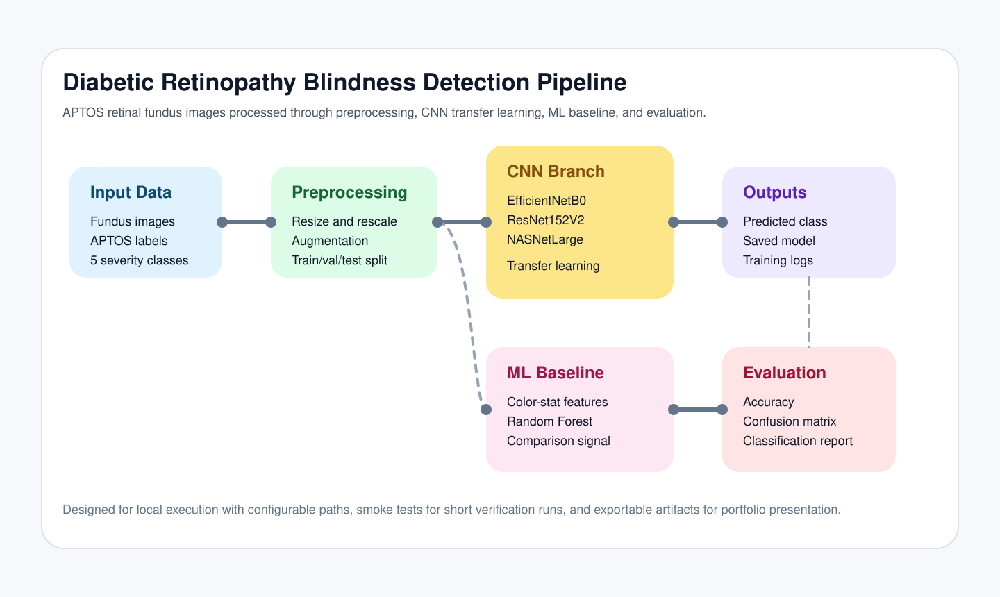

1. Input
APTOS retinal fundus images with diabetic retinopathy labels from grade 0 to grade 4.
B.Tech Capstone · CNN + ML
This project grades diabetic retinopathy severity from retinal photographs using transfer learning CNNs, a classical ML baseline, and exportable evaluation artifacts. The repository is structured for clean demonstration, reproducibility, and public presentation.
Pipeline
APTOS retinal fundus images with diabetic retinopathy labels from grade 0 to grade 4.
Image resizing, normalization, augmentation, and stratified train-validation-test partitioning.
Transfer learning with EfficientNetB0, ResNet152V2, or NASNetLarge plus a Random Forest baseline.
Accuracy, confusion matrix, classification report, training logs, saved models, and JSON summaries.

Comparison
The cards below compare the role and tradeoffs of each model family used in the project.
Results
This presentation layer does not invent experimental numbers. It shows the exact evaluation outputs the codebase is built to generate on a final run.
Implementation
The project was decoupled from Kaggle-only file paths and adapted to a clean local repository layout.
The codebase now exposes one final CLI entrypoint with backbone selection, smoke testing, and artifact export.
README, architecture diagram, and this GitHub Pages UI were added so the project reads like a product, not a notebook dump.
Future Prospect